For students
Notes that are ready for revision.
Your notes open exactly where you left them, sorted by subject.
- Freefor good, no student plan to run out
- Offlinelibrary wifi optional
- Any laptopWindows, Mac (Intel too) and Linux
- Yoursplain files that outlast the course
01Every subject
A space for every subject.
Open Biology and that’s all you see. October’s notes on cells are still there, next to the page you said you’d go back to.
Cell structure
Mitochondria release energy.
Ribosomes make proteins.
The nucleus holds the DNA.
Water moves in by osmosis.
Plant cells also have a wall.
Example notes. The paper and the type change with the space.
02Maths and science
Maths that looks like maths.
The formulas look the way your teacher writes them on the board.
Spot a mistake? Click it, fix it.
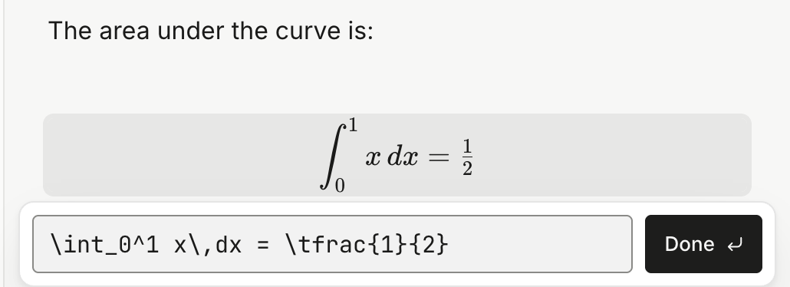
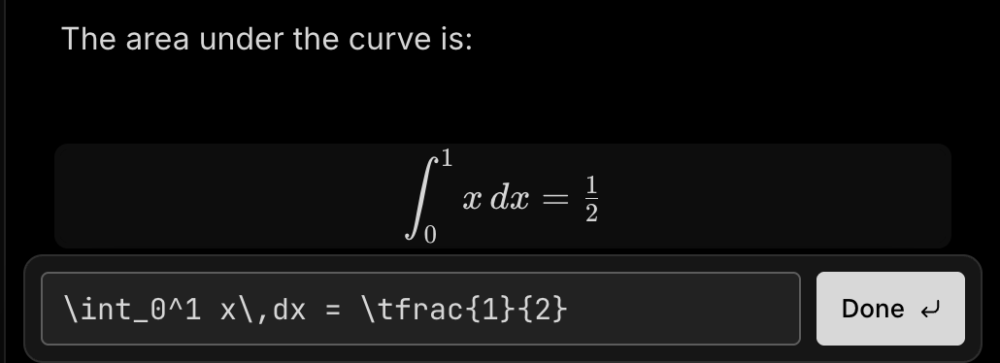
03Testing yourself
Hide the answer. Test yourself.
Fold each answer away and work down the list. Open one only when you’re sure.
What do mitochondria do?
Release energy in respiration.
Differentiate y = x².
dy/dx = 2x
What is the wave speed equation?
v = fλ, speed is frequency times wavelength.
How do you say thank you, formally?
감사합니다.
Tap a question to open it.
04Colour
Colour-code it like your paper notes.
The key terms are already highlighted, so your eyes go straight to them.
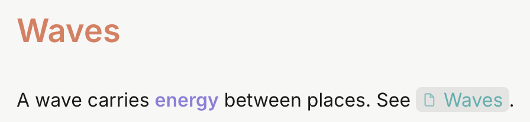
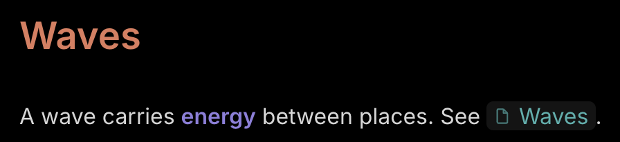
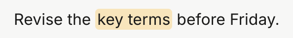
05Linking
Join the topics up.
Waves links to Interference, and Interference links to the next topic. Follow them in order and you’ve covered the lot.
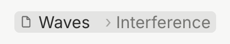
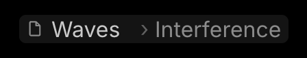
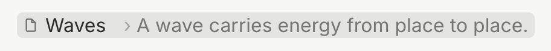
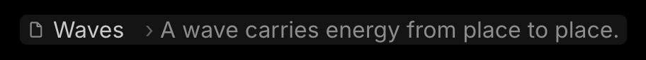
06The rest of the pencil case
Everything else you’ll need.
-
Tables
Type /table. Add rows and columns from the + bars at their edges.
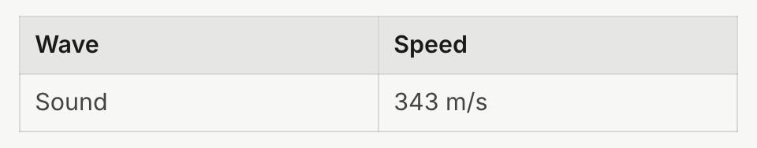
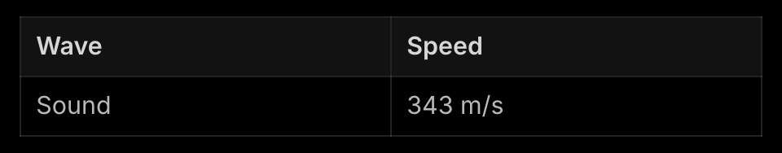
-
Checklists
Coursework deadlines, ticked off right in the note.


-
Lecture slides in the note
Drop in a PDF or a PowerPoint. It’s saved beside the note, and a click opens it in its own app.
-
Two notes side by side
Open up to three notes in columns: the lecture on one side, your summary on the other.
-
An easier reading font
Turn on the Easier reading font for any space that needs it.
-
Bring last year with you
Notes from Notion, Google Keep, Apple Notes or Word come across, with a report of anything that didn’t.
-
Archive a finished module
Out of the way, still searchable, ready to put back when the exam comes round.
-
Revision videos in the note
Paste a YouTube link and it becomes the video’s title. Switch on Player view and it plays right there.
07Questions
Before you start.
Is there a dark mode?
Yes, three: Dark, Extra dark and Slate. Each subject can have its own.
Can I add photos of my handwritten notes?
Yes. Paste or drag a photo into a note and it sits alongside what you typed.
Can I share notes with a friend?
Send them the note’s file. It’s plain text, so it opens in almost anything, even without Notealise.
Can I use it on my laptop and the computer at home?
There’s no built-in sync. Keep your notes folder in OneDrive, Dropbox or iCloud Drive and open it on each computer.